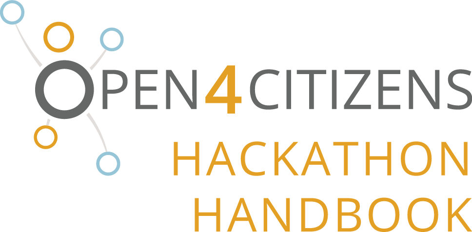
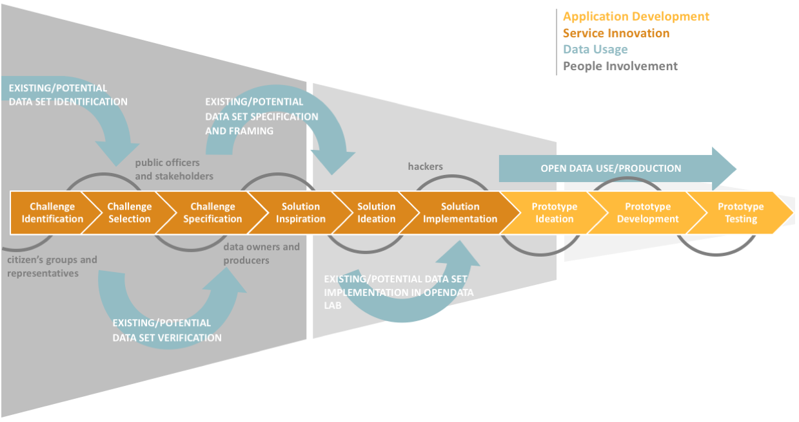
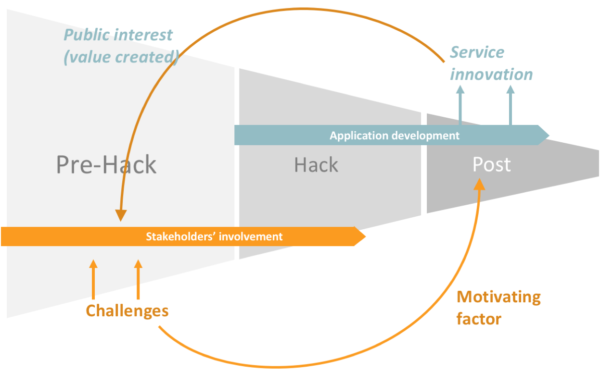
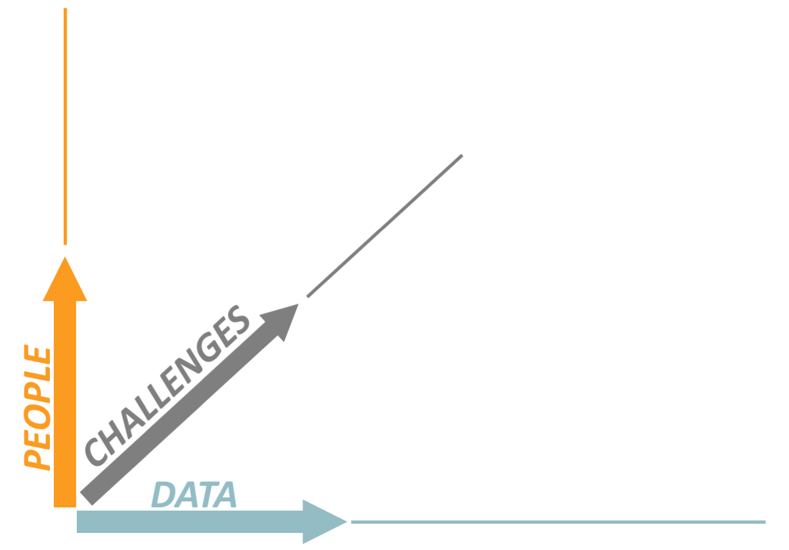
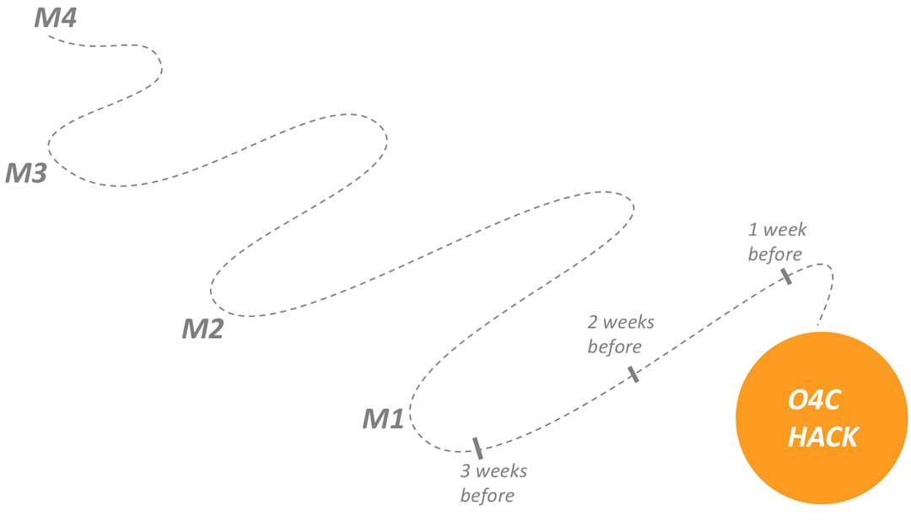
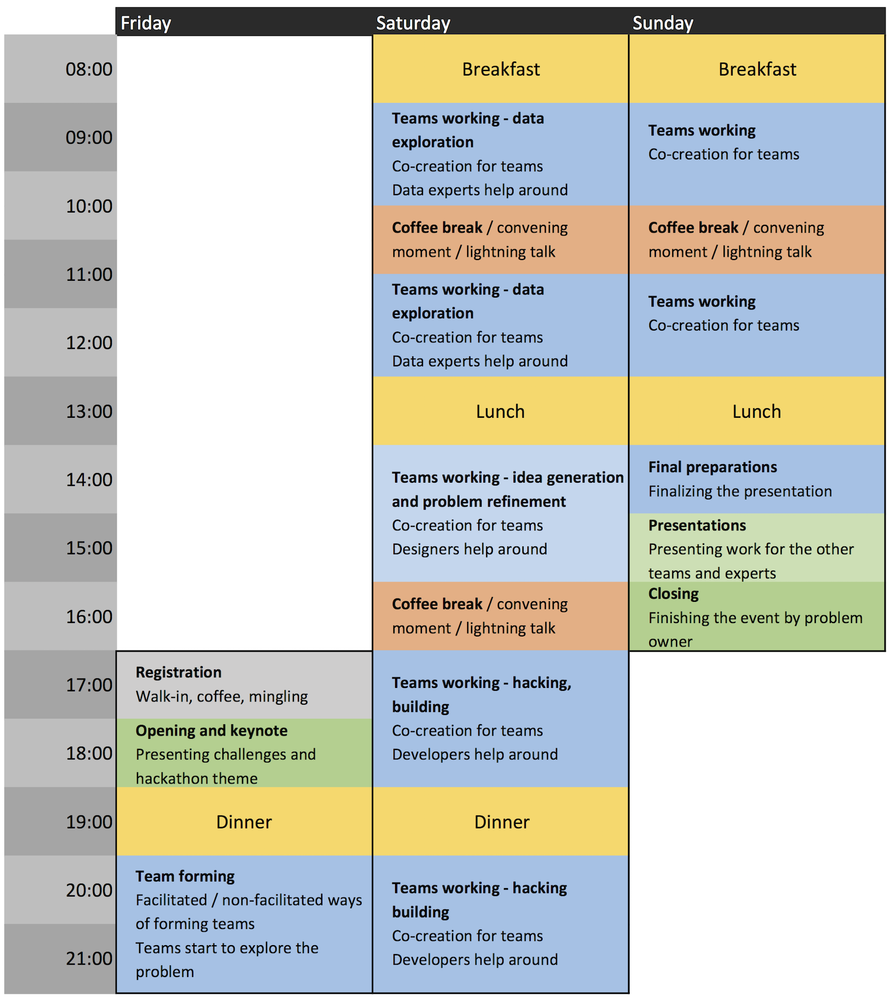
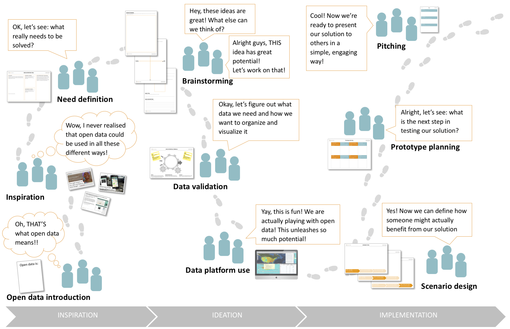
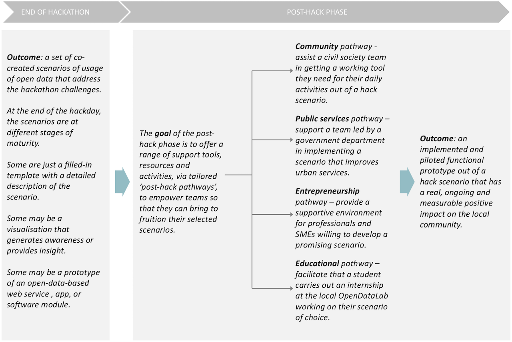

Latest update 24 June 2016.
Glossary
Table 1 Glossary
| Acronym | Definition |
|---|---|
| [Mobile or Web] App | A self-contained program or piece of software, especially designed to be downloaded by a user on a mobile device or personal computer. |
| Challenge | A widespread call to action to participate in an open contest (like a hackathon) for improving or renovating an existing situation. |
| Citizen | An inhabitant of a particular town or city. |
| Citizen initiative | An initiative proposed by a (collective of) citizen(s), which ideally is informing the challenges for the hackathon process. |
| Hackathon | A collaborative pressure-cooker event (see definition), most often involving software developers and domain experts, which is typically lasting several days and is aimed to the production of one or more apps. |
| Non-expert user | A person without professional or specialized knowledge in a particular subject (usually computer programming). |
| O4C approach | An approach based on the progressive interaction between three different activities: 1) Explore; 2) Learn/apply; 3) Consolidate. |
| O4C platform | The technologies, methodologies and communities of the Open4Citizens project. |
| Open data | Data that can be freely used re-used and redistributed by anyone - subject only, at most, to the requirement to attribute and share alike. Source: http://opendatahandbook.org/guide/en/what-is-open-data/ |
| OpenDataLab | In Open4Citizens, a virtual/physical playground, being a point of reference for local citizens, interest groups, grassroots communities, service providers, IT experts, start-up businesses and students wanting to have access to open data to generate new services and applications |
| Pressure-cooker event | A time-pressured event where teams work on certain projects together, most often following a predefined schedule. |
| Public service | A service provided by a government body to people living within its jurisdiction, either directly (through the public sector) or through financing a third party (agency or subcontractor). |
| Smart City | An urban development vision integrating multiple information and communication technology (ICT) solutions in a secure fashion to manage a city's natural, physical and human assets. |
| Urban services | Urban services are public services, though not necessary initiated or delivered by the government. |
| Urban Living Labs | Urban Living Labs are socio-digital innovation environments in realistic city life conditions based on multi-stakeholder partnerships that effectively involve citizens in the co-creation and co-production of new or reformed public services and infrastructures. |
| Social impact | The effect induced [by a certain project or initiative] on the well-being of a community. |
| Social sustainability | The ability of a community to develop processes and structures which not only meet the needs of its current members but also support the ability of future generations to maintain a healthy community. Source: http://www.businessdictionary.com/definition/social-sustainability.html#ixzz2y75dJTij |
| Quadruple Helix | A collaboration model of civic society, academia, local government, and private enterprises. |
With more than a half of global population living in cities (a proportion that is expected to increase to two thirds by 2050) the quantity and quality of urban services made available to citizens by the local government – directly or through specific agencies and/or alliances with civil society – becomes of prominent importance. Indeed, urban services deeply affect our lives by shaping and constraining the way we experience, and interact with, the city organization in its manifold aspects. Traditionally, this was related to the fulfilment of the basic needs of a decent life - from street cleaning to domestic water supply, from waste collection to sanitary sewer systems - issues that have been in focus of city managers for thousands of years now. With the emergence of the Welfare State concept about a century ago, and even more recently with the diffusion of an environmental consciousness among the general public, urban planning and administrative processes have been growingly held responsible for a variety of additional functions, such as the protection of citizens’ health and safety and the ecological preservation of urban landscape. This has gradually led to a holistic notion of urban services, touching upon all aspects of individual and collective life, including education, culture and leisure time; not to mention social integration and civil rights.
However, experience shows that usually there is a considerable gap between the way urban services are designed and what the citizens expect from them. Such gaps may emerge because of the service design logic – being driven by too technical goals or adopting too bureaucratic approaches – or as a consequence of substantial societal changes, which the existing services are unable to address. This gap generates constraints on the everyday life of citizens, that makes such services socially unsustainable. As a result of this situation, civil society or the business community can come up with alternative ways of fulfilling the same specific needs or service expectations, but the impact of these on city organization can be unpredictable, if not controversial – as the example of “Uber” is there to show. Also, the local government itself, supported by disruptive technologies (such as those typically gathered under the Smart City label) and adopting innovative delivery models (such as the public private people partnership, engaging citizens in service co-creation), can decide to undertake an urban service transformation pathway of its own.
This handbook addresses the information needs of anyone involved in city management and administration – whether as a “regular citizen” or an elected official, civil servant, or member of a nonprofit or nongovernmental organization – willing to seize the opportunities offered by the availability of open data to address service transformation goals or to increase the social sustainability of urban services. We offer a deeper insight into the global practice of hackathons, which has been popularized by many successful instantiations (particularly from the US) and that we are trying to make even more inclusive than in the concrete examples we know about: not only a technical marathon for coders and service hackers, but also an opportunity for the general public to co-design the urban services they need, together with the public agencies (and equivalent stakeholders) in charge of delivering them.
First of all, because this trend is definitely here to stay. National, regional and local governments around the world - albeit at different speeds - are increasingly embracing the commitment to opening up their own datasets in a machine-readable way, in order to increase the level of transparency and accountability of public action, ignite economically viable businesses, and ultimately improve the quantity and quality of their own services.
Additionally, because nowadays with the progress of technology (for example, the so-called Internet of Things), a large variety of data is becoming more and more available as public commons, produced by social communities and/or sensor networks, which very few people assign a value to, due to lack of reflection and experimentation on which related or unexpected uses could be envision for those datasets.
The worldwide experience of hackathons shows the huge potential of these – relatively easy to organize – events to increase awareness and understanding of the value of open data and its ability to tackle difficult problems by developing simple, sometimes minimalistic, solutions.
However, the (partly unjustified) impression left by hackathons is of something restricted to IT-savvy participants – coders and technical developers able to generate self-sustained apps and similar software tools within the narrow time frame of a 1-2 days long round-the-clock marathon.
Our proposal – supported by a number of concrete demonstrators, now being planned and organized in five European city locations – is to complement the hackers’ capacities with the contributions of ordinary citizens in designing, validating and adopting the innovative service concepts made possible by the combination of technologies with open data.
This is the specific, distinctive trait of our project’s proposition. Not a fully original one – as in many hackathon experiences we are aware of, the role and involvement of “normal people” has been considered and actively supported by the organizers.
There are two main characteristics of the O4C hackathons compared to existing alternatives.
Firstly, citizens are continuously involved in all the phases of the O4C hackathon process ( “pre-hack”, “hackathon” and “post-hack”). This is a derivative of the Urban Living Lab approach. The essence of an Urban Living Lab partnership is to involve organizations from the Quadruple Helix - i.e. representing civil society other than academia, local government, and private enterprises. The underlying concept is to adopt and apply citizen-centric and participatory methods to the co-design and co-experimentation of innovative urban services together with their prospective beneficiaries.
Secondly, the O4C hackathon events are explicit linked to the purposeful process of opening up and sharing of public datasets, and this linking is encapsulated in the new and innovative concept of OpenDataLabs (ODLs). ODLs are virtual/physical playgrounds, localized and nurtured at each hackathon site with the active support of Quadruple Helix organizations, acting as a point of reference for citizens, interest groups, grassroots communities, service providers, IT experts, start-up businesses and students who are willing to get access to open data to generate new services and applications. Our project promotes the formation and growth of an OpenDataLab not just as a meeting place, but also as a knowledge resource for lay persons wanting to understand how to use open data to create new services for their everyday lives.
An overview of the O4C hackathon process is supplied in the following session. This document goes through the pre-hack, hackathon, and post-hack phases, providing pragmatic knowledge for people involved in the organization of these.
There are two overarching aspects of the overall process – Stakeholder engagement and Evaluation – that are discussed at the end of each section, since they are forming a flow of actions, instead of stand-alone activities.
As mentioned above, the O4C hackathon process is framed along three phases: pre-hack, hackathon, and post-hack. These three phases give rise to a converging process aligning the problems experienced by citizens and the open data made available in the urban environments towards the O4C hackathon scope, i.e. service innovation/creation.

Figure 1 The O4C hackathon convergence process
The alignment process (Figure 1) starts with the identification of an urban challenge (in a given city) that indicates citizens’ attention and activism surrounding. Around this challenge, four distinct paths are activated: service innovation, people involvement, open data management, and application development.
Application development. The application development starts during the hackathon step with solution implementation. After this, the development starts with prototype ideation and is followed by prototype development and testing.
Service innovation. After starting the activities around a broader, general urban challenge, the scope is reframed and more exact challenges are identified, selected and specified considering the information gained on the problem experience and the opportunities offered for possible solutions by open data exploration and identification. In the alignment with available data, inspiration for solution and solution ideation can take place, making the solution implementation possible during the hackathon step towards the development of an application.
Data usage. Available open data are identified with potential relations to the identified problem. Available datasets are verified in term of coherence with the problem and its potential solutions, in term of usability. Datasets are selected along the alignment process also considering the early inspiration for solution and then integrated into the OpenDataLab platform.
People involvement. Citizens, people, activists are involved from the beginning with their experiences in the urban life, their social networks and their roles in organizations and community groups. Furthermore, public officers and relevant stakeholders are also engaged together with data owners and producers, while the identified challenge is better defined and clarified. When a sufficient alignment between the problem specification and open data identification is reached, the hackathon phase can take place, hackers can be involved, and the application development can start.
The whole O4C hackathon process is framed on the involvement of citizens and stakeholders (Figure 2). The centrality of the related problems of citizens works as motivating factor for the involvement of citizens in the service innovation/creation process, resulting in increasing the public value of the whole hackathon.

Figure 2 The value creation cycle of the O4C hackathon
Fundamentally a successful O4C hackathon is an event that 1) enables participants to make real and meaningful use of open data, and 2) invites the participating teams to address problems of relevance to specific topics and actual “problem owners”. This requires a continual involvement of a wide range of stakeholders spanning both pre-hack planning and preparation, the hackathon itself – but also facilitation in the post-hack follow-up.
As you begin reaching out, promoting and recruiting, it might be helpful to think of potential stakeholders on a spectrum between Collaborators that help “build the ground” as you arrange the whole hackathon process – and the Participants you expect to engage at the actual hack-events (of course this may overlap; collaborators might also participate and vice versa).
Table 2 Stakeholders of the different hackathon events
| Pre-Hack | Hackathon | Post-Hack | |
|---|---|---|---|
| Problem owners, issue/subject matter experts and/or passionate “grassroots” / curious citizens | Need to be involved to ensure definition of relevant topics and themes for the hackathon. Only in this way actual problems of real value can be addressed. | “Problem holders” or “issue experts” are crucial for inspiration and continual relevance and context of the problem/solutions being worked on. They are “experts” as they are directly touched by the main theme. Some may even represent the problem in all its aspects; as problem holders. |
To allow for a “continued life” for the solutions and ideas proposed during the hackathon, problem holders and issue experts are key. (e.g. figuring as relevant partners proposing data or enabling testing). |
| Public authorities/services, Representatives from Municipal, Regional or national level and/or Interest groups and NGO’s | Can provide important insights about existing organizational, business related and institutional settings. Also they can help define a relevant problem and/or provide access to relevant data. |
Able to provide leverage and context. Can provide informed understanding of existing (social) infrastructure as well as relevant political contexts. | Can play a role in ensuring the continued work, development and incubation. |
Students and researchers (e.g. Programmers, Gamers, Coders, topic related study fields, designers, digital methods, data journalists or other) |
Can engage projects that inform the planning of the hackathon events. | Participation, Ideation, Networking and Learning. | Can pursue projects that test and develop concepts and prototypes further after the event. |
| Open data enthusiasts, scientists, journalists or other mindful techies and data explorers | Can provide expertise that allow for thinking creatively about data acquisition and data possibilities. Can assess and search for relevant open data, examine it and rate it in terms of openness and relevance. Some data might also need to be converted into the relevant format. | Ensure provision of documentation of the data made available for the “hack”. Assisting the participants to access the data - or develop ideas with the data in mind; incorporating it into their concept/product (without having to actually tinker with it themselves)1. | Can advice in the continued post-hack process of updating and providing relevant data sets. |
| Start-ups and creative industry | Networking in terms of promotion inspiration and ensuring the recruitment of a critically thinking and creative crowd. | Incorporating attention towards sustainability and continued economical life of projects. | Can play a role in ensuring the continued work, development and incubation. |
| Sponsors of various kind | Think already early about making agreements with relevant collaborations. | Making it possible to host an event with food, attractive venue, swag and maybe even a prize to win. | Can play a role in ensuring the continued work, development and incubation. Supervision and mentoring. |
We recommend keeping an eye on involving representatives from the clusters suggested in Table 2 – however who’s crucial or not may depend on the specific topic and challenge to be worked on. Also, the proposed inputs and activities in the matrix might very well overlap, we just aim to sharpen your attention towards these dimensions.
The O4C Evaluation Framework takes a pragmatic and flexible approach to assessing the impacts and benefits of our processes and instruments. The evaluation framework is intended to guide the O4C consortium partners in the five pilot locations to consistently and coherently measure the hackathon process through which the project hopes to achieve its overarching aims. The outcome towards which the project is acting is a positive (social) impact of the OpenDataLabs on the social sustainability of urban services, to be achieved by narrowing the gap between: 1) the way services are designed and citizens' everyday lives; 2) the technological possibilities offered by open data availability and stakeholders' ability to understand and use the possibility. The full evaluation framework includes tools and guidelines for data collection and analysis, as well as the timings of these activities. Reflections on the data gathered will take place at regular intervals in order to share learning, mitigate problems and negative outcomes, as well as maximize positive outcomes locally/nationally and across the project partners.
This evaluation contains both formative and summative elements. The focus is on process evaluation, to facilitate learning and sustainability, taking inspiration in particular from the performance audit approach and tools laid out by Ling and Villalba van Dijk (eds.) (2009)2. The detailed evaluation framework will be found in O4C Deliverable 4.1 Evaluation Framework, together with supporting tools and guidelines and including theoretical reflections on choices made in its development. Points regarding evaluation in this deliverable will therefore serve as reminders of activities, resources needed and timings. For full detail of templates to be used and guidelines, please see Deliverable 4.1 as well as information related to task and Deliverable 4.2 Data Collection and Evaluation.
By outlining our recommendations in this handbook, we won’t attempt at supporting any predetermined recipe. Through an illustration of what we’re up to, we hope to inspire and/or provoke innovative responses and similar initiatives.
It turns out there is a lot more at play in the early planning and preparation phases than what might originally be envisaged. It is therefore helpful to map out and label the myriad of activities that lead to the accomplishment of successful hackathons, aligned across locations within the O4C Consortium (as well as to be replicated beyond them). In the following we detail the scoping phase3 - or what we refer to as Pre-hack activities.
At its core, “pre-hacking” is open, dynamic, agile and evolves over several months. As all pilot domains differ, pre-hacks are all about exploring options, collaborations, datasets and topics - and being able to respond to what is being learned and discovered in the process.

Figure 3 Illustrating the 3 dimensions of co-creation during hackathons
To prepare a relevant context and line-up for the co-creation during the hackathons many elements and resources have to be brought productively together. In particular three overall dimensions deserve attention: People, Data and Challenge Topic (Figure 3).
The pre-hack phase is about defining, framing and reframing the challenge topic to be worked on4 (Challenges). Ideally this process is closely weaved together with the exploration and examination of the data possibilities for a given topic; what is available and how open is it? (Data). As well as continual engagement and involvement of relevant citizens, stakeholders and interest groups (People).
The O4C hackathon aims to engage citizens and communities around open data under an overarching challenge topic. This corresponds what might be labelled a “themed hackathon”. The advantage of this compared to “technology hackathons” is that it is relatively easier to attract “domain experts” with knowledge and passion about the selected subject matter. As an organizer, you will need to be mindful about how you plan the facilitation of projects and work that revolves around the problems brought to the table by these topic “experts” or enthusiasts.
As you narrow down the ideal problem and challenge topic to focus on, you might start with the availability of interesting open data - or you might be triggered by the urgency of a particular problem or urgent crisis to tackle. Either way there are several aspects to keep in mind and fold together:
Strive for a topic that is clearly articulated either as a coherent question or formulation of a clear social need(s). It should provide clarity and focus; inviting someone to solve the problem with a relatively specific solution. At the same time room must be maintained for innovative, diverse and creative responses.
Continuous involvement of issue experts/enthusiasts is crucial as they enable real-world relevance. Without relevant people continually and actively involved you risk ending up having hackathon participants “solve problems that don’t really exist”
Engage in dialogue with both domain experts/enthusiasts with knowledge about the topic and people that are knowledgeable about open data. Both parties can give valuable inputs.
Ongoing search for and analysis of the data sources available. Make sure the necessary resources (e.g. datasets) exist; that they can be made available for participants to design effective propositions.
Data exploration informs the overall formulation of what topic to be worked on at an O4C hackathon. You should make sure to begin data investigation as early as you can, in order to make sure that relevant datasets can be collected to form the ground for the development of adequate solutions in the hackathons.
Ideally, bundles of potentially relevant datasets are to be collected and organized on the online platform for the project (OpenDataLab.eu) together with a set of tools and guidelines that will support the visualization and manipulation of data. For a quick overview over the functionality of the OpenDataLab Platform see section 2.9 and for more a more detailed description, see O4C D4.5 Data Management plan section 3.
A big challenge however, is the relative immaturity of open data as a broader phenomenon and the varying local dedication to the publication of such data. Some datasets might not be of actual value due to their formats, the lack of continual update, missing information, incomplete metadata or other – if the datasets are even made publicly available at all.
Therefore, you had better prepare yourself to such a time-consuming task as to find, collect and prepare relevant datasets. Also you might want to think alternatively about what data to make ready (for instance, data on e.g., empty apartments in an urban area, may not be immediately relevant for a hackathon that is working on migrant communities; nevertheless, the presence of such data could prove crucial to develop some of the solutions emerged during the hackathon). You are best-off approaching data collection with an open mind and a critical angle. For more details about the technical requirements of data for the platform, see D4.5 section 3.
When you strive to include technically skilled people or students – as well as ordinary citizens who are passionate about a particular topic, you need to make sure to design and facilitate the inclusiveness of the process; also when it comes to working with and making use of data.
If you value and support only certain forms of engagement (e.g., traditional hack skills such as programming and coding) you will limit the size and diversity of the pool of potential participants. You need to be mindful about how openly/broadly or narrowly you structure the opportunities for engagement and possible solution proposals.
If you aim at engaging a broad variety of people and citizens to interact and play with data – you will need to allow them to do so in the ways they feel inclined to. It is absolutely key to maintain an understanding of data that is more inclusive than exclusive!5
Pre-hack activities involving data that is recommended to enact include:
Search for, analysis of and preparation of data sets. This should ideally involve assessment of relevant open data published by public sector organizations along with the examination and rating of the data in terms of its openness and quality.
You might consider a demand-driven perspective on data during the pre-hack phase. This is done by approaching your stakeholders such as collaborators and/or your participants and try to bring the possible challenge topic into play as early as possible. This will help you create a prioritized list of open data to collect.
Think quality not quantity! Rather than importing whatever ready-made found in open data repositories, be critical and go for datasets that are really ready to use (e.g. can be converted into the right format, organized in an accessible library with searchable, headings and meta-data that describe the contents of the dataset).
Prepare yourself that working on the data might be time-consuming. Expect an iterative and ongoing process. Some of the datasets will not be available at the time you need them, some will be difficult or even impossible to get, or be out-of-date, and others will need to be changed into another format or aggregated.
Start considering how the uncovered data will be made available for the participants and take the characteristics of the data into consideration - e.g. if a dataset is frequently updated a simple dump to an online library will expire over time and potentially lose its value. Beware that gathering data takes time and making it available is a grand task in itself.
Clear documentation and overview need to be prepared for the participants. You will need detailed consideration of how to assist participants in terms of accessing the available data. It is necessary to provide overviews and clear guidance about what data is available and an assessment of their quality. You need to make a strategy for how you will support the understanding of participants and citizens of the potential of both the available datasets but also open data in general. They should be capable of and allowed to developing ideas and incorporating open data into their proposed products – even though they might be unable to find and assess the data themselves; tinkering and programming.
Another key activity is selecting visualization tools and methods for engaging the hackathon participants through the OpenDataLab platform suite. Such instruments might be made available to the potential participants before the actual pre-hack; to invite participants to experiment, build understanding and expectations - or even proposals for the hackathons.
Prepare for involving people with a wide range of knowledge in terms of IT and skill levels: from the ignorance of IT application and open data, to the expert knowledge into technological aspects that would support possible solutions and explore the existing datasets on the basis of their relevance for the theme of the hackathon.
There are numerous good reasons for working closely with collaborators and stakeholders in various ways - in terms of defining a relevant topic/problem to be worked on, accessing and fetching appropriate data sets, preparing the logistics of the event (food, venue, tech and sponsorship) as well as reaching out towards a diverse pool of participants in the pre-hack. In the following we will expand a bit on what we’ve already outlined in Table 2 in Section 1.2.
We suggest you strive to cover representatives that span the Quadruple Helix model6 for innovation processes. This means aiming to facilitate that civil participants work together with representatives from government, industry and academia. The ideal here is the enabling of a collaborative future of open data that aim to equally engage institutional bodies, public authorities, research arenas, business sector, creative industry and curious citizens.
Zooming a bit more in, it works well to have an eye for involving the proposed clusters below (Table 3). It can inspire new ideas for contacts to make if you critically care for mapping out the status of engagement as you plan an O4C hackathon yourself. Depending on what topic and data you work on – as well as the local collaborative composition available to you; some may be of particular relevance while others may be more peripheral.
Table 3 Stakeholders’ engagement at the pre-hack events
| Pre-hack | |
|---|---|
| Problem owners, issue/subject matter experts and/or passionate “grassroots” / curious citizens | Need to be involved to ensure definition of relevant topics and themes for the hackathon. Only in this way actual problems of real value can be addressed. |
| Public authorities/services, Representatives from Municipal, Regional or national level and/or Interest groups and NGO’s | Can provide important insights about existing organizational, business related and institutional settings. Also they can help define a relevant problem and/or provide access to relevant data |
Students and researchers (e.g. Programmers, Gamers, Coders, topic related study fields, designers, digital methods, data journalists or other) |
Can engage projects that inform the planning of the hackathon events |
| Open data enthusiasts, scientists, journalists or other mindful techies and data explorers | Can provide expertise that allow for thinking creatively about data acquisition and data possibilities. Can assess and search for relevant open data, examine it and rate it in terms of openness and relevance. Some data might also need to be converted into the relevant format. |
| Start-ups and creative industry | Networking in terms of promotion inspiration and ensuring the recruitment of a critically thinking and creative crowd |
| Sponsors of various kind | Think already early about making agreements with relevant collaborations |
Below we enlist a selection of relevant dimensions to think about when involving collaborators in various preparation stages of your process - as well as when you promote and recruit participants for the hack events7:
Engage with the real people who express their interest in your project and aim to prioritize everyone you involve - think about what it means to build “with” and not “for” your collaborators and participants.
Have in mind what motivations might make various stakeholders, collaborators and participants curious and interested enough to engage in your project efforts. Communicate clearly and directly to each of them - one size might not fit all!
Take point of departure in existing initiatives and (social) infrastructures - this is crucial to gain leverage and navigate relevant sociopolitical contexts. There can be huge synergy-advantages in teaming up with existing organizations and institutions already doing work on the field you’re stepping into! Explore the best ways to partner up!
Be kind, flexible and bold in a “participatory snowball method” of involvement: use the contacts you make to “co-strategize” about who is important or not; who would they recommend from their network of contacts? (As collaborators, sponsors and participants?)
Caring for the relations you build is important because only through the active engagement and involvement of relevant people, communities, authorities and organizations; will you allow for addressing needs driven by communities.
Aim to allow for a process that invites the expression of community ideas, needs, wants, opportunities and aim to let this input drive problem-identification and problem-solving. – And make sure to capture and document the needs, ideas, skills and contributions that are expressed in this process.
Make sure that the people invited to the hackathon represent a reasonable cross-section of the social ecosystem related to the main theme the hackathons will cover. Keep, update and dare to share your list of relevant social groups to approach, to have them represented in the hackathons.
In terms of participation: you need to strive for a match between the skills needed for the project/challenge topic to be worked on – and the skills expected to be brought by participants (and in sufficient quantity to form interesting groups).
Keynote lectures. Work well as sharing of common ground at a meetup or as an inspirational lunch talk about open data or some case study to create awareness. Might tease in relevant students or other around data or topic-related issues.
Data exploration sessions or “data sprinting”. A format or a digital method to be scaled at different levels ranging from a 2 hours intensive exploration around either a particular sample of datasets or a given topic. Some variants of it are more well-defined and run for a whole week to analyses data, produce visualizations and network graphs as well as give shape to further analysis.
Gatherings and meetups. A meetup is a format for self-organized local groups often aimed towards improving the communities they live in or discuss a topic they are passionate about. As such it might be a relevant activity for you to prepare the hack; remember to allow for keynote-talks and mingling as these are the first steps towards the creation of a community.
Design challenge. Define a design brief related to the topic, that is attractive to students. Students do these things to challenge themselves and get a nice portfolio item out of it (the least), but if there are prizes it’s even better. Another motivational factor for students is to get to network with design agencies (or companies with designers), so jurying by some experts is also an interesting proposition.
Roundtables and workshops. These events work well as an occasion to bring together relevant subject/topic experts and open data experts. The purpose is to engage them in the design of challenges and problems to be worked on e.g. the specification of problems and opportunities you will be facilitating the hacking activities to address.
A narrative and scenario-based approach. It might be included in the range of pre-hack activities you choose to engage. As one of the concrete outputs from roundtables, workshops, interviews, meetings and other activities you might strive to produce a series of sample descriptions that use narrative styles to help the team approach potential hackathon participants to figure out the potential and opportunity of the co-creation activity in the hackathon. Concrete and detailed scenario-sketching with people moved by the problem in focus, also work well to suggest the inclusion of further datasets. Be aware though that such sample description do not represent the whole range of possibilities to explore in the hackathon - the hackathon must be open to further creative opportunities.
Interviews and meetings. Such events enable that you elaborate specific challenges through the description of problematic areas and opportunities, possibly using scenarios or other narrative techniques, that can be used in the following steps approaching the hackathons, to engage other relevant stakeholders.
As we have already proposed in terms of engaging stakeholders of various kind, you will need to make sure to become visible on the local arena of the topic or place to be explored, for example, through explorative dialogue, taking part in events and meetings. Seeking out particular people/organizations to contact either to directly involve them in workshops or try to recruit them to play a role in the hackathon events.
Promotion is a core dimension in most of the preparational activities that will fill your calendar (be that interviews, meetings, workshops, participation in other events and activities, roundtable panel discussions or other). At every step and with every contact pay attention to how best to enroll the relevant actors and care for what motivates them to become involved.
Make sure to define a strategy for promotion and recruitment that is tailored to the local specificities, interests, availabilities and preferences. Issues to take into account:
Settle the dates for the hackathon you will host and choose a venue
Make sure to have a place where all public information about the event can be accessed (e.g., a website or another publicly accessible place)
Outline an ideal timeline of the promotion plan and recruitment:
When do you want people to sign up/register their interest?
What materials, tools and steps are needed - and when?
(Adds, notices “save-the-dates-teasers, posters, Eventbrite accounts, animated videos, brochures, other?)
What social media platforms are of relevance reaching out to the group of people touched by the topic you’ll work on? Tailor media/communication strategy towards how, when and what social media presence might make best sense (Facebook, Twitter, Instagram, Google groups, mailing lists or other…). However: Never spam anyone!
Choose a hashtag - and consider to set up a Tumblr8 or Hackpad9 page for teams to record progress and post links.
If you run a themed hackathon on open data, you need to plan for how to reach different audiences: How will you reach the communities that will care about your event? This includes both people with interest in open data (the local open data / open knowledge community) as well as other curious citizens, students and many more. Some may be interested in open data, others may not bother about open data at the outset - but might be curious to engage intensive problem solving on a particular topic.
Aim for clear communication in terms of what might motivate and pique people’s interest. Do they need input to organizational innovation development? Are they attracted by network and learning opportunities? Are they curious to receive support and guidance on particular tools or data-sets?
Don’t forget about reaching out towards decision-makers; think about what story might be of interest to them.
Be mindful about how you want to tell your story - how would you like people to remember it?
Take photos - crucial part of telling and richly documenting the story of your hackathon!
Put yourself in the shoes of those you want to invite: what is ideal for them?
If someone participates in their professional capacity; weekends might not be ideal. On the other hand; students and volunteers might prefer weekends; as they might already have a full job/school calendar. Parents might find weeknights challenging, and so on.
Remember to check for other potentially clashing major events within the field.
Make arrangements with an inspiring venue - reserve the dates and detail your booking. Most likely you will need a place living up to the following criteria:
Proper seating
Power strip per table
Fast and reliable Wi-Fi (Can it connect all of your participants, with all their devices?)
Projector available
Microphone (if the room is large)
Accessibility (e.g. wheelchair-friendly entrances, timed lock-downs, etc.)
Toilets and bathrooms
Post-it notes, A3 papers, whiteboards, large papers, pens to draw with, ….
Plan for what budget you have and strive to provide good snacks for keeping the heads and brains fresh and loaded during the intense hackathon sessions.
Coffee, light breakfast and water during the day make a good start - however your budget will define what you’re able to offer.
If you choose to provide food: you need to provide vegetarian options and consider other dietary restrictions (vegan, gluten-free…). Healthy food is a good way to go - not to make people sleepy or get them drunk (with alcohol).
Consider if particular kinds of food are particularly relevant for your topic; e.g. green, sustainable, ethnic diverse, experimental – or other. What you provide makes a contribution to the spirit and atmosphere of the event.
Don’t aim for single-sized logo t-shirts and random stickers! Think about what might be attractive to participants – and how sponsorships can be about providing crucial basic things that make a great event: could be food, could be keynote speakers, could be the venue itself, could be all sorts of other relevant things! Thinking carefully about who might make good partners with an interest in your topic and line of work; might open your eyes to venues, keynotes or other crucial support!
By using Eventbrite10 management of applications, upkeep of event information and collectively messaging participants is made simple and easy both for the project organizer and for the participants.
From the participants’ point of view all event-information is located in one place, they can share the event with others and will automatically be notified if the event information is updated by the organizers. From the organizers’ point of view each pilot will be given their own account (e.g. through Gmail11) which means that each pilot can manage their own event.
Make sure to set a suitable deadline or timeframe for the signups during the pre-hack phase.
Beware that a long and complicated sign-up process can be daunting and scare off potential participants. Be precise about which information you need from the participants in order to evaluate their applications, forming teams, creating an engaging event and learning from it (evaluation).
A simple format might be:
Name (and possibly other information as required by venue security)
Study area or Job title
Age
City of residence / Country
Previous hackathon experience?
How did they become aware of this event?
Do they have any special needs/requests?
What is your main motivation for joining (E.g. are they Passionate about topic? Open data enthusiast? Eager to hack and code? Other?)
Degree of open data familiarity:
[ o (don’t have a clue!) ---------- o (average) ---------------- o (full-blown expert)]
Degree of programming12 familiarity:
[ o (don’t have a clue!) ---------- o (average) ---------------- o (full-blown expert)]
How to label the skill they can provide?
(E.g. Developer. Designer. Data Scientist. Domain Expert. Government Staff. Scout. Analyst. Communicator. Project Manager. Advocate. Super-collaborator or other)
A playful and rather informal method for having participants map out their level of skill in various fields might be drawn from Schoolofdata.org13. With inspiration from the role-playing game Dungeons and Dragons14, they propose a format (see footnote) for mapping out skill-levels in a radar plot and assigning “roles” based on where participants are strong (or alternatively have participants propose what areas they would like to learn more about). Having clearly defined roles is a key part of online role-playing games like Dungeons & Dragons - and this method attempts to copy that into the hackathon setting.
You might find this idea relevant either to be adapted and adjusted during the start of your event - or to be modified so as to work as a frame for your online registration design. Put yourself in your possible participants’ feet though: what characters seem relevant and inclusive?
A key part of handling the registrations is deciding on how to form and set the teams up – and when to do this: How might you facilitate for the participants to group up working on their preferred case (e.g. prior to the event already or at a mingling session)? – Or will you as organizer do the team formation either beforehand or at the start of the event? Will you use the character sheets proposed above or some other method?
Either way: Most likely you will face the challenge of having to carefully think through how to bridge the gap between various skill-types and decide on how to ensure that interesting multidisciplinary teams are formed.
Some might be good at understanding problems on a given arena and analyzing these; while not necessarily having experience in formulating this as a workable tech project. Others might excel in actual programming, data tinkering, service design or concept development. Ideally, a team consists of several skill types brought at play together.
In the process of registration, you should be mindful about how you communicate with and “label” your participants. You reach out towards diverse audiences and no-one should feel excluded at the registration. Ideally everyone should feel confirmed that “this is an interesting event for me to join”!
All in all, it’s a question of balancing not to make participants tick of too many boxes and give too detailed info - while at the same time ensuring you’ve got the information you need to prepare the ideal planning ahead. Based on what you learn about participants in the registration you can already start imagining in concrete terms: Who might be working on what and how best to draw on their skills.
A two-step procedure might be considered: A simple lightweight registration procedure; followed by a follow-up email later on: requesting further information after they have registered. This will also enable comparison of research data between the different pilots and might be crucial in terms of evaluation.
Continue to make sure to keep your coming participants curious and updated about the event. Part of this might be to enabling them to play around with and tinker with some of the tools via the platform already before the event is launched. This also allows for participants to visit and revisit the detailed info about the event – allowing for them to make judgements about whether or not to participate.
The aim is that the OpenDataLab Platform will support the participants through all three phases of the hack cycle and embrace both the non-tech and the tech-savvy participants.
During the pre-hack phase, the platform will be opened to participants so the developers can get feedback on its functionality. This will allow maturation through an iterative design approach and prepare the platform for the hackathons. When the platform is opened everyone can access it via http://www.opendatalab.eu and it will present:
A short introduction on how to use the platform;
A short introduction to open data explained in a common non-tech language;
Concrete inspirational examples on how open data is used around the world inspired by the examples in the Hackathon Starter Kit and the cases from the Open Data Challenge Series15;
Tryout datasets to play with;
Five data silos - one for each pilot - where datasets can be uploaded and stored;
Tools to visualize and manipulate data;
Tools for developing applications;
Possibly it will link to open source code storage like GitHub;
Possibly link to diverse inspirational material: relevant TED Talks on data or the domain and topic in question.
By presenting both development tools as well as visualizations tools the platform will allow participants to play in a full spectrum of open data; from “exploring open data” to “exploiting open data”. Read more in depth about the role of the platform in the hackathon in section 3.4.

Figure 4 Illustrative generic mapping/visualization of key Pre-Hack Activities in a proposed timeline counting down to event.
A more detailed list of activities and the timeline is shown in Table 5.
Table 5 Timeline checklist towards the pre-hack
| What | When | Type of activity / Color label |
|---|---|---|
| Challenge topic definition begins | 6 months before | Challenge topic |
| Data search intensifies | 4 months before | Data |
| Final topic is announced | 3 months before | |
| Save the date notifications are promoted | 3 months before | Promotion and recruitment |
| Registration opens | 2 months before | |
| Coordination with collaborators | 1 months before | |
| Find helpers to assist you in the execution of the event (registration table, tech support or other tasks…) | 3 weeks before | |
| Make sure to reach out to the channels where you want the story of your hackathon to be told (media and other) | 2 weeks before | |
| Make sure you have available relevant amount of post-it notes, whiteboards and flipcharts, pens etc. | 2 weeks before | |
| Email with information is send to participants | 1 week before | |
| Double check food and other logistics to be in place: make food catering orders (if needed) | 3 days before | |
| Check locations: are you all set? | 1 day before | Logistics / Practicalities |
Below in Figure 5 you can find an example schedule of a 48 hours hackathon event. The general O4C hackathon process is most optimally to run for 24-48 hours, and keeping it within this length ensures the pilots of each location comparable to the others. At its core, this is a “standard” co-creation event schedule and a standard way of proceeding for such event. However, keep in mind, that co-creation events are naturally fuzzy, various phases do not necessarily follow one after other in a linear way.

Figure 5 Example schedule of a 48 hours hackathon.
For the O4C hackathons, we want to see a shared set of values behind the code of conduct, and this will be published on the Open4Citizens or OpenDataLab websites. For each pilot, this general Code of Conduct can be adapted (with specific needs for the pilot or translation to the local language). Make your pilot’s Code of Conduct visible on the website! If it is phrased in a concise manner (5-10 bullet points), it can be included in the registration process or similar. Please note, that you want it to be read and considered, not just hastily checked the box to approve before registration!
Put yourself in the shoes of those you want to invite: what is ideal for them? If someone participates in their professional capacity; weekends might not be ideal. On the other hand; students and volunteers might prefer weekends; as they might already have a full job/school calendar. Parents might find weeknights challenging and so forth. Remember to check for other potentially clashing major events within the field.
Depending on your budget, there are several options to have a great venue. Try to find a venue that is meaningful for your domain – you might be able to find a venue that your community uses, or a cozy co-working space where your key activists tend to work. In the end, the venue boils down to available dates for your hackathon, as well as how many people do you want to host.
For the venue, consider if you want to have the hackathon running overnight; some venues need extra bureaucracy, security, etc. to enable 24/7 access. Also, if the hackathon is running overnight, you should provide some side rooms where people can rest. If you can arrange some mattress, that is helpful, but you can also just announce it to your participants to bring along sleeping bags and whatnot.
The venue should support the dynamics of "working in teams" and "gathering everybody". Teams need a table with enough seating, and it's even better if they can have their "war room" – a corner where posters and post-its can be hung on the wall.
In case you have access to a large room, there are various ways to separate team spaces; you can construct temporary walls with curtains, boxes, etc. The sketchiness of such constructions fosters creativity :)
Besides working in team spaces, you will want to gather your participants altogether for presentations and so forth. Your venue should accommodate to presentations without destructing the team spaces for each gathering occasion!
At last, an area for breaks is great to strengthen the informal mingling of teams, and it can be used creatively for other purposes too; such as meeting place with experts and so forth.
Power extension per table
Fast and reliable Wi-Fi (Can it connect all of your participants? Etc. etc.)
Projector available
Microphone (if the room is large)
Accessibility (e.g. wheelchair-friendly entrances, timed lock-downs, etc.)
Toilets and bathrooms
Post-it notes, flipcharts, brown paper rolls, A3 papers, whiteboards, large papers, pens to draw with, crafting materials, ….
Printer/scanner
It is wise to elect different people for different event responsibilities. This mainly depends on your team and how you prefer to run events, but here are some general good practices.
Event host. It is recommended to have an assigned person to "run the show", who is facilitating keeping the schedule and times, looking for the energy level of participants and intervene with an energizer, announces things and so forth. Key characteristics of a good host is to broadcast energy at times when everybody else is down, and the ability to see, listen and anticipate of how the group is doing. This is usually coming with a flexible mind to running an event, where problem solving to happen in an improvised way.
Logistics. The person who acquires everything necessary before the event, handles the different vendors and generally the go-to person for anything that regards logistics. Key characteristics are to do things not right before deadline, but plan ahead and an ability to delegate.
Dissemination. Someone needs to make sure that the event is visible on social media, photographs are taken, videos are broadcasted live, etc. An assigned person on this role can make sure that follow-up will be done, as well as able to invite and provide information for media outlets.
Content/process. It helps to have someone on the team, who makes sure that what the participants are doing is going well. This person can be the contact for experts and problem owners, and support the team working time continuously with various interventions when necessary.
Closing. Generally, it's also a good practice to have someone less busy to take care of the closing. By the closing, your organizer team will be exhausted, so it is somewhat better to give the responsibility to someone else than the ones who are especially head-start busy.
Main organizer. Depending on the size of your hackathon, you might want to elect a 'main organizer', someone whose main function is to handle the organizers of the event. For example, if you have 30+ participants, you will need some additional support, who can assist in running a smooth event, do errands and etc.
Internet connection. Pay special attention to the capacity of the available internet connection at the venue. Will it actually be able to run the amount of computers AND mobile phones AND tablet, etc. that are possibly brought along to the hackathon?
Power. Most attendees will bring at least one device that will need power during the hackathon so make sure to have enough power sockets – that work! Bring extra power sockets or ask your participants to bring extra. And remember to check with your venue on what to do in case of power down – like where are the extra fuses, etc.
Computers. Remember to ask people to bring their own computers and other devices that they might need.
ODL access. All participants should have access to the OpenDataLab Platform.
Privacy legislation. According to EU directives and national legislation and regulations, the participant are the sole owners of their personal data. This does not include registration data, but also their personal appearance, as it could be captured by a photograph taken or a video recorded on site. Usually there is little care of this particular aspect from both the organizers and the attendees of a public event, but what if someone created a case because his or her image has been published on Facebook without permission?
Luckily this risk can be prevented by following a few simple rules:
During the online sign up, do not forget to let people put a tick alongside a text that more or less says: “all your personal data collected will be safely stored and only handled for the purpose of this hackathon organization. If you disagree on making your identity known to the other participants (e.g. within listings) please put a tick here”
During offline registration on site, a smart idea is to prepare a leaflet that every participant should sign, stating that “Being this a public event, we can’t avoid that pictures are taken and videos are shot by the participants themselves, as well as the press and TV. By signing here, you accept that your image can be published on social media, newspapers and TV channels without your explicit and direct consent”.
Despite the above, please keep in mind that the image of children and more generally people below the age of 18 may not published without the explicit written consent of their parents of equivalent.
Another common mistake is to collect personal data (name, address, email etc.) and then reuse it for e.g. making another invitation to the same people for another hackathon. Keep in mind that this behavior is barely legal, although the chances that someone may raise an issue are pretty low. To protect from this risk, you just have to mention this possible reuse when first collecting personal data (namely in the context of online signing up and/or offline registration for the people who did not book in advance).
For the registration, leave a 30-minutes time-window for walk-in, queue up; whilst everybody is arriving, do provide coffee for the already arrived people.
How can you facilitate people mingling? One factor is people who are more international tend to somehow team up with others who are international (shared language – English – is very important if you don’t master the local language). Some people arrive with peers, and tag along them, because it is awkward and artificial to meet with new faces.
It is important to focus on the people who are without team – organize them in made-up clusters during registration, for example by providing a colored sticker or a number to them. These clusters will provide an excuse to start a conversation in a cluster – and these clusters may emerge to teams later on.
If you are organizing your event in a public space, you want to mark your participants and organizers: use colored bracelets or nametags. Organizers could get a uniformed t-shirt too.
Start your event with showing the problem area, presenting the challenges. Your audience is a mix of people you have met at the pre-hack and who are completely new, or people who are coming from the event’s domain/theme, and people who are makers/coders/etc. Thus, set the tone of the kickoff “with the beginners’ mind”. It is helpful for everybody to recap information and get everyone on the same page.
For the event kickoff, you want to have your participants in a room where presentations can be held (so-called “theater setting”). There will be multiple people speaking in front the audience, so have them in the first row. Have one person who is the event host (see section 3.1.2), who is the main face of the event conducting the process.
You can introduce the problem area and challenges by having “problem owners” – these people can present the problem and be the reference at the event for further clarification (see section 2.4 and section 3.3). If the problem area is somewhat abstract or an exact owner cannot be named, showing a (short!) video clip about it works just as well.
Be mindful about the tone of voice and mood you set during the event; it is better to be more playful than strict, and if you make sure that timing is kept within acceptable boundaries, there is nothing else that can go really wrong. If the mood is playful, it is easier to get through the inevitable drips of low energy long hours into the evening.
The big moment has arrived, time to run your hackathon. The core of the agenda is to follow a co-creation design process, where teams attend the Ideation space, the Inspiration space, the Implementation space in a fuzzy process. You cannot expect the process to go as a sequence, but it can provide guidelines for teams without much clue how to proceed. The mentioned spaces are of course abstract concepts – they are not physical spaces, but differing activities and modes of thinking, all of which the teams need to attend at various points of their process.

Figure 6 Visualization of suggested sequence of preliminary hackathon starter kit tools. Quote bubbles display the intended gain of each tool from participants’ perspective.
The aims of the preliminary hackathon starter kit are to lower the barriers to entry in a hackathon for all participants. The kit should support participants to understand the challenge they want to address, to understand the opportunities of open data, and to work well with other participants. In addition, the kit helps the hackathon organizers ensure that it is easy to guide participants through all hackathon stages, to easily be able to see where in the process each team is working, as well as if they may need some support from the organizing team. In addition, the information on the tools can be captured to map the innovation process and as project evaluation material. The starter kit tools are available as PowerPoint (.ppt) files for all partners to print from the original and to be able to translate.
The use of the kit will require some pre-event preparation from the hackathon organizers. The Table 6 below suggests timings and details for this preparation.
Table 6 Pre-event preparation activities for preliminary hackathon starter kit tool
| Activity | Timing | Responsible person | Resources needed | Note |
|---|---|---|---|---|
| Recruitment of additional O4C team members to help run the hackathon & support evaluation activities. | As early as possible but up to 2 months before and at least 1 week prior to hackathon. | Pilot leader | Preferably, at least 1 person per hackathon participant team. The partner team members will have a number of different roles to play during the hackathon, e.g. registration, coordinating refreshments, troubleshooting, coordinating presentation material, engaging with stakeholder not in teams, gathering and logging materials etc. | No additional notes |
| Starter kit tool translation (if necessary) | 1 month before | 2 different people, 1 without previous knowledge of the preliminary hackathon starter kit. Coordination with team member at Antropologerne. |
Allocated time for the translation work. | Translation is required if the hackathon will be carried out in a language other than English. To ensure consistency of meaning, it is useful to have an O4C team member do the initial translation from English to the local pilot language. Translation by another person from the pilot language back into English can help identify any areas of misunderstanding or local meaning that is different to the meaning elsewhere. Coordination with Antropologerne will ensure that any adjustments needed are captured and made consistently across the O4C pilots. |
| Replacement of kit tools with alternate tools (if necessary) | 2 weeks before | Pilot leader | Amendable template of the tool in a format available to all partners (e.g. in .ppt). Short narrative for evaluation outlining 1) which tool in the kit is being replaced or supplemented, 2) justification for replacement or additional tool. |
No additional notes |
| Print hackathon starter kit | 1½ weeks before | Pilot leader appoints responsible person. | A printer capable of printing in colors and different formats (A3). Also, printing paper in A3 and A4 formats is needed, as is scissors for A5 tools. | The .ppt files available for print can be found in deliverable 2.4. It is crucial to print the starter kit before the briefing (see below) |
| Initial briefing for O4C hackathon team | 1 week before | Pilot leader | Overview explaining the role of each member of the hackathon facilitation team so that everyone knows their tasks and responsibilities. Also, relevant sections of the Hackathon Organization Handbook should be printed and handed out to every hackathon team member prior to the hackathon. |
The starter kit should be presented during the briefing in order to make sure that everyone understands the tools and will be prepared to help hackathon participants use them. |
| Acquire all utilities necessary during the hackathon. | 1 week before | Pilot leader appoints responsible person | Post-it’s, markers, pens as well as whiteboards or flip-chart paper. | Make sure to acquire enough pens, markers etc. for all participants. Bring extra just to be sure. |
Table 7, below, lists all the preliminary hackathon starter kit tools and the stage of the hackathon to which they relate. The hackathon organizers should bear in mind that the hackathon activities are iterative, and participants may therefore move back and forth in their use of different tools, rather than in the sequence in which they are described below. It is essential that all members of the organizing team thoroughly read D2.4 in order to make sure that they are prepared for facilitating a positive process for each of the participants’ teams. Adapting an encouraging attitude and being supportive towards the ideas and processual choices of each team is crucial for creating a great hackathon. When presenting the tools from the hackathon starter kit, hackathon organizers must make sure to emphasize that the tools are meant as support and that participant are free to use them in any order or way they want. Partners should stand by and be ready to offer support to each team when necessary, but they should not interrupt or try to steer the process.
The aims of each tool are explained below, allowing pilot teams to ensure that any replacements made fulfil the same aims. Detailed descriptions of these aims can be found in D2.4 Preliminary hackathon starter kit.
Table 7 Preliminary hackathon starter kit tools related to hackathon stages and tool aims with respect to supporting the participants’ innovation process
| Hackathon phase | Tool | Aims | Note |
|---|---|---|---|
| Pre-hack | “Dream Solution”/ “Preliminary Need Definition” card | During pre-hack, individuals and organizations present will be asked to define and describe “real” concrete characteristics and needs on need definition cards, based on their own needs or the needs of someone they know. This serves two purposes: 1) the identification of additional stakeholders/ groups to invite to the hackathon, and 2) the opportunity to present these real needs of real people to hackathon participants, making the solution development more focused. |
This tool is used during the pre-hack as well as during the hackathon. |
| Inspiration cards | Each inspiration card presents a relevant case study to inspire participants by showing concrete examples of how open data can be used and what social benefits this can create. | Note that this tool is used during the pre-hack as well as during the hackathon. The toolkit contains completed cards and blank templates for each partner to contribute with their own examples linked to the theme in their respective location. | |
| Inspiration | open data Introduction | A one-page document written in simple language will make it possible for participants without prior knowledge to understand what “open data” is. | Note that the OpenDataLab Platform also entails pedagogical descriptions and inspirational examples to support participants’ understanding of open data. |
| Inspiration Cards | Each inspiration card presents a relevant case study to inspire participants by showing concrete examples of how open data can be used and what social benefits this can create. | Note that this tool is used during the pre-hack as well as during the hackathon. The toolkit contains completed cards and blank templates for each partner to contribute with their own examples linked to the theme in their respective location. | |
| Need Definition Card | During the hackathon, participants can read the Need Definition Cards that were filled out as part of the pre-hack, or they can make their own cards with an intended beneficiary in mind, thereby steering the solution development towards real needs. | This tool is initially used during the pre-hack and can be used by participants during the hackathon in two ways: 1) reading through the cards that have previously been filled out, or 2) creating their own cards. | |
| Need Definition Tool | The Needs Definition Tool will help participants define what key critical issue they want to address, why it is important and whom it is important for. | In case participants are struggling with this tool, the Need Definition Cards might be of help | |
| Ideation | Concept Definition Tool | The concept definition tool facilitates the process of team brainstorming, prioritization, selection and concretization of a challenge solution to explore. | Partners may select several other tools to be used to facilitate the co-creation process, e.g. narrative tools, design games, role play, group sketching, issue cards, mind maps, etc. The project evaluation will include a shared repository of alternative or supplementary tools. |
| Data Validation Tool | The data validation tool will help teams ideate and reflect on what types of data they need in order to achieve their proposed solutions. | An additional benefit of the data validation tool is that hackathon participants may identify data sets that do not yet exist or that are not open data. These could then be requested from the data holder in question, adding to the pool of open data. | |
| OpenDataLab Platform | See section 2.9: “OpenDataLab Platform” in this document. The overall aim is to make participants curious, willing to “play” with the platform and explore the manipulation potentials of different data sets, regardless of their baseline technology manipulation skills. | The OpenDataLab Platform will be available to participants through all three phases of the hack cycle (pre-hack, hackathon and post-hack) and embrace both the non-tech and the tech-savvy participant. | |
| Scenario tool | The scenario tool allows hackathon participants to explain their idea to others in a compelling and standardized way irrespective of the nature of the solution. | Teams might need help visualizing the scenarios from partners with drawing skills. | |
| Implementation | Prototype Planning Tool | The Prototype Planning tool guides hackathon participants through thinking about how to go about developing their solution beyond the hackathon. | Partners need to consider the extent to which they are able to provide support for post-hack activities in order to ensure that hackathon participants are not promised more support than the project can deliver. |
| Pitching Tool | The pitching tool provides guidance for all hackathon participants about how best to structure and deliver their pitch within the hackathon or outside it. | Teams might need partners to listen and respond to their pitches as they practice. |
Experts give a great additional layer to your domain/theme. Depending on the domain/theme, there are more and less relevant technologies, organizations and etc. that are interesting to have at the hackathon. The main expertise you seek are for relevant technology, for relevant open data or relevant for your hackathon theme.
Experts that are domain experts in your theme are often activists (e.g., for transparency budgeting of governments) – they should be excited about the hackathon, because it is an event to push their agenda.
For companies that represent some technology, joining a hackathon as experts is mainly publicity for a company (that is one argument to use for fundraising), and it is in their own interest to promote their own technology (such as use their special solution (or skill set) instead of another, competitor one).
To handle data, there are different expertise that can be looked for.
When it comes to urban data, GIS experts (Geographic Information System) are of great value.
Other data experts can come from (business) analyst background, these people know how to make sense of numbers and know their way around Excel. Even better if analysts have worked on business intelligence: using data to support decision making (this often comes with experience in visualization as well).
Data journalists and data visualization experts can be handy to help out your participants telling story hidden in the data. Their expertise is at producing "pleasing" outcomes from the data, but they are often quite skilled in hands-on, no non-sense ways around analyzing datasets.
The O4C hackathons are based on a co-creation process that is an expertise for designers. Thus, involving designers as facilitators can help to support the organization of the hackathon. For example, they can help to push out a team from their dead-end discussions, help out in a creativity session or help in telling the story of the generated concepts. These skills are typically natural for service designers and user experience designers comfortable working with people.
For the event, it is important to define a few things about the involvement of experts and brief the experts beforehand what you are expecting from them. In a way, they are half-way between the organizers and the participants, so they can be of great use to have the organization running smoothly.
Make sure that the experts are going to be present and how. Will they walk around and proactively help teams, or be present sitting around the area and be approachable? Some people prefer to the one and some the other, better to discuss it with the experts what is their personal preference. They can also pair up with each other to limit distracting the teams to fewer occasions. Also note, that experts are sometimes seen as "the one with the answers", and on any topic. So, their confidence is key to encourage the teams towards solutions :)
If the experts are to help with certain technology, then align with them before the hackathon, so that their represented technology is added to the event wiki, or other shared area, and if there are physical tech to play with (electronics, etc.), then discuss who is responsible for bringing the tech around: you or they (including insurance and replacement if something happens).
If you have the means, find a way to compensate/appreciate the experts for their involvement. At least get a small gift for appreciation, and make it personal – like write a postcard or sign a picture from the event. People join to work on their passion and to meet with fellow people who are interested in the same things. Thus, networking with other experts is maybe the biggest benefit for them.
Occasionally a convening moment is valuable for the teams; they get stuck in their thinking or an endless debate around their table, or just simply go mentally exhausted during the process. To break that routine, a planned break can give a new boost. This dynamic of diverging (in teams) and converging (into the full group of hackathon participants) keeps a good balance of activities throughout the event, which suits all sort of participants.
You shouldn’t mind if not everybody joins a break – some people like not to break their good flow of focus. It’s perfectly normal.
Coffee break. A traditional way is to have a coffee break (as simply as just announce around that there is fresh coffee and some fruits), and people will slowly emerge. There is usually at least one person per table who wants to stand up and have a break, and he will grab the rest, though it might take a while (such as a developer doesn’t want to stand up until finished with fixing a bug). The importance of the break is also to make teams meet with other teams – you are aimed at building a community, thus inter-team interaction is essential to make bonds.
Convening moment. A convening moment is a facilitated break, where all the hackathon participants stand in a circle, and there is an energizer activity conducted, or a “flashlight” (each individual in the circle say something for max 30 seconds, doing a round of speeches). This is a good way to have a snapshot of all the teams, and you can intervene with some experts for those who are very behind or could use some external minds to look at their work. Such activity builds bonds again in the way, that everybody speaks up and people listen to everybody – there is a conversation starter for all. Based on the speeches, people interested in similar things can find each other easier.
Lightning talks. Lightning talks are “mini-keynotes”, where the experts around can present a short, 15 mins introduction for their domain of expertise. If you have invited experts at your event, use them in such way! If you don’t have many experts, then you might be able to find some participants who are really skilled in one thing or another. Such experts could be asked to share some tips and tricks or basic knowledge on how to do an activity that is valuable for most teams (e.g., how to make data exploration in Excel or similar). The key is to have a 15 mins intro into the topic and then teams can try out the new techniques, and perhaps reach out to the expert for further guidance. If the teams get inspired to do the next steps based on the fresh learnings, then it is already a success.
Lightning talks can be scheduled in advance, but don’t panic if you couldn’t do it before starting the event. Just try to probe your participants and see who are the ones who are really knowledgeable things, and try to have the lightning talks scheduled in a way, that it somewhat resembles the overall process of the teams (e.g., have a talk about “effective presentations” around the final blocks of the working time; or have a talk about “data exploration” around the beginning of the working time).
As the Open4Citizens consortium consists of academic partners as well, for them it is essential to scientifically reflect on the hackathon proceedings. Much of the research data is collected as part of the evaluation framework (see section 3.4 and section 2.10), but further methods might be introduced as well.
As a general procedure, anonymous surveys can be distributed before and after the event, potentially online (tied to the registration system). The “beforehand” survey should be aimed at profiling the participants for future analysis and evaluation, as well as to set “baseline measures”. The “afterwards” survey is to collect and measure participants’ satisfaction and behavioral impact of the events.
Qualitative methods might be additional stakeholder interviews to happen before, during and after the event, and the outcomes of these interviews can support e.g. case study analysis and descriptions.
Preferably, data collection methods should be automatic or semi-automatically aggregated to ease organizational overhead as well as to ensure comparability of collected data.
Ideally the collected [research] data has not only scientific, but also practical value to learn how to better organize the next rounds of hackathons and to foster knowledge sharing between hackathon pilots.
The hackathon is nothing without having the right people. Hopefully when the hackathon you have been planning is soon to “kickoff”, you will have a core group of people from the pre-hacks who are eager to continue the discussions and collaborations you together have initiated. However, the hackathon event is of bigger magnitude; it should cater to more people, and bring together varied expertise. This is why the involvement of stakeholders begin early on during the pre-hack process. Make sure to read the pre-hack section 2.4 on “Stakeholder engagement”.
Besides curious domain-engaged activists, citizens and enthusiastic technologists, you are likely to reach out to students (who are eager to join in for increasing their network or practice their skills applied on actual problems, to improve their portfolio or else), and other professionals who could contribute to the success of your event. For professionals, you can check out Section 3.2.2 on “Involving experts”.
Depending on the group you are reaching out to, you need to start doing this at least 2 months before the hackathon. The agenda of working people gets populated very quickly, and you want to attract them early enough to have the hackathon timeslot booked in their calendars. On the other hand, for students it might be last minute decision to join in, and that is fine – it is not always the “planners” that do the best contribution.
In Table 8 below we suggest the ways in which various people can provide valuable expertise and experience to your hackathon event - both during the hackathon and after the event itself. In fact, we provide the post-hack column in this section already; to remind you that the post-hack phase begins at the hackathon; and should be carefully planned for along with the event itself.
Table 8 Stakeholders’ engagement for hackathon and post-hack
| Hackathon | Post-Hack | |
|---|---|---|
| Problem owners, issue/subject matter experts and/or passionate “grassroots” / curious citizens | “Problem holders” or “issue experts” are crucial for inspiration and continual relevance and context of the problem/solutions being worked on. They are “experts” as they are directly touched by the main theme. Some may even represent the problem in all its aspects; as problem holders |
To allow for a “continued life” for the solutions and ideas proposed during the hackathon, problem holders and issue experts are key. (e.g. figuring as relevant partners proposing data or enabling testing) |
| Public authorities/services, Representatives from Municipal, Regional or national level and/or Interest groups and NGO’s | Able to provide leverage and context. Can provide informed understanding of existing (social) infrastructure as well as relevant political contexts | Can play a role in ensuring the continued work, development and incubation |
Students and researchers (e.g. developers, hackers,, topic related study fields, designers, digital methods, data journalists) |
Participation, Ideation, Networking and Learning | Can pursue projects that test and develop concepts and prototypes further after the event |
| Open data enthusiasts, scientists, journalists or other mindful techies and data explorers | Ensure provision of documentation of the data made available for the “hack”. Assisting the participants to access the data - or develop ideas with the data in mind; incorporating it into their concept/product (without having to actually tinker with it themselves)16 | Can advice in the continued post-hack process of updating and providing relevant data sets |
| Start-ups and creative industry | Incorporating attention towards sustainability and continued economical life of projects | Can play a role in ensuring the continued work, development and incubation |
| Sponsors of various kind | Making it possible to host an event with food, attractive venue, swag and maybe even a prize to win | Can play a role in ensuring the continued work, development and incubation. Supervision and mentoring |
Evaluation activities during the hackathon primarily involve data gathering on the O4C hackathon approach (process evaluation), the experiences of the participants and the extent to which their attitudes to and knowledge about open data are changing.
The primary methodology will be participant observation. Each participant team should be assigned a member of the hackathon organizing team, who will be available to answer any questions that they have about the use of the preliminary hackathon starter kit tools or where to find additional information that they need. If there are not enough O4C team members to have one per participant team, each individual will need to alternate between more than one participant team. If possible, it is beneficial to have at least one well-briefed evaluator who speaks the hackathon pilot language but who is not a member of the core O4C pilot team as this allows for a non-embedded view of the hackathon activities.
As part of the pre-hackathon briefing for the hackathon team, everyone will be guided through the evaluation activities to be carried out during the hackathon. Standard guidelines and data collection templates will be made available to all pilot locations as part of and supporting the O4C project Deliverable 4.1 Evaluation Framework. In order for the evaluation material gathered to be consistent and comparable across pilot locations and between the two hackathon cycles, it is essential that all members of the O4C hackathon organizer team receive a thorough briefing and answers to any questions they may have. This could be done at the same time as the briefings on the use of the preliminary hackathon handbook, as described in section 2.
To ascertain the role of the OpenDataLab Platform in the hackathon highlights from the initial user journey are described below as well as what we envision.
Firstly, the participants will be properly introduced to the platform (at the intro of the hack-event) and the technical support team (people who know in detail how the platform works) will be presented. They will be able to explain what is available and what can be done when using the platform.
Due to the focus on citizens in the Open4Citizens project the platform has to embrace both tech-savvy and non-tech participants and help everyone to better at understanding and being aware of open data. This will be done through selected tools inside the platform. Some tools will allow visualization, others will allow use of open data, while others will aim more at creating a basic understanding through explanations. This means that the platform will be relevant from different perspectives – the tech-savvy can immediately start building applications or prototypes and exploit the open data while the non-tech participants with good ideas can start building understanding through exploration of open data – and eventually build concepts. In order to enable this inclusive approach to “hacking with open data” providing overviews for the participants with descriptive information (e.g. in Excel or other spreadsheet or doc format) about each dataset will potentially be of great use.
Participants will be able to create a user inside the platform where he or she can access the projects they are working on as well as the data sets that have been uploaded to the data “silos”. (The overall architecture of the OpenDataLab Platform is described in D4.5 section 3). The data silos act as an open data buffet where participants can grab the datasets they find interesting and relevant and either utilize them in the different tools.
The expected outcome from using the OpenDataLab Platform is:
Increased understanding of the capabilities and possibilities with open data gained through visualization and exploration;
Concepts that build on open data;
Applications that build on open data.
For the closing of the event, you will want to ask all your teams to present their work. The final presentations can be for the other teams and experts (the people who went through the whole event and experience together – the feeling of camaraderie is quite high by this point), but you can also turn it into a public event.
It is upon your preference for your hackathon to have a competition (with awards and jury) for the final presentations or just a friendly environment, where everybody just shows proudly what they made. In either case, it is valuable to provide feedback to the teams regarding certain aspects. Try to elect some experts as "jury" or "expert panel" to give input on:
Degree of open data is used?
Effectiveness of building awareness?
Level of implementation?
Business/social/environmental sustainability?
Impact of the project?
...
You can also think of a participatory voting, where teams vote on other teams to elect a best (most promising, etc.) "People's choice" award.
The closing of event is very important and at times overlooked as it is sequentially later than everything else happening earlier. Thus, it might be a good idea to have an assigned person from the organizers team to just be responsible for the closing, with no other task beforehand.
The closing is on one hand a wrap-up of what happened. If you had photographers, videographers (or just regular organizers, participants) taking pictures or videos, a cool addition to the closing is to have a quick slideshow of images to recap of what happened, how it felt. Also, practically speaking, these things are good to be done as soon as possible, otherwise they get forgotten/unattended.
There is an obvious limit to how detailed and ready an idea can become during a 3-day hack-session. This means that often ideas are not taken any further – as multidisciplinary teams dissolve and pack their bags to return to their various “homes” (e.g. often teams are formed the hackathon as an occasion). This dissolution is a recurring challenge in relation to the pros and cons of using the hackathon as a format for innovation. The question of how to support and elaborate the “innovative baby-steps’ taken during a hackathon is therefore an important consideration worthy of exploration.
As part of our O4C endeavor we therefore advise, to carefully think through how support will be given to nurture the ideas ignited during a hackathon. Ideally strive for making arrangements for a tempting and tailored “post-hack” package and communicate it clearly already early on; it might work as a motivator for many of the potential participants to know what support is offered elaborating their ideas further.
There is a wide palette of options to consider - and how the post-hack is best configured will depend heavily on the partnerships and collaborators around the core organizer team for a hackathon - as well as the topic to be addressed.
Suggested overall dimensions to guide you to set-up arrangements that allow for hackathon outputs to be further worked upon, tested, and deployed in real-life contexts so as to have an impact:
Assistance and mentoring in terms of how to engage in app development;
Assistance and mentoring about taking user-perspectives into account;
Loops and iterations with relevant user-groups;
Assistance and mentoring in terms of business models.
While planning the hack-events, every local partner in the O4C consortium has also been working with the progressive establishment of the OpenDataLab platform advocated and updated by and through the local gatekeeper to the resources available.
We strive to ignite a network promoting meaningful use of open data - and to nurture ideas growing out of the hackathons. We are the “middlemen” that involves relevant partners and gathers appropriate stakeholders. Ideally this takes the shape of an “incubator structure” that includes both partnership with companies and start-ups, (existing local) makerspaces or other existing structures of overlapping interest. A key concern in this process is the attention towards how relationships are framed between stakeholders of various kind (citizens, startups, companies, universities, public authorities, etc.).
Depending on the level of readiness for a proposal – and the composition of a specific team behind the idea; a key aspect might be the support the software development of an application. Another aspect is the support that enables groups to ensure business plans and inspiring economic sustainability for the service/application proposals that stem from the hackathon. Ideally, real start-ups and companies are involved as supporters/partners/ mentors here: helping them with facilities and with legal, programming/development and communication matters. It is crucial to strive to nourish economical sustainability and help implement viable business models for the ideas that are developed.
Post-hack activities might include:
Events, Open Data Day gatherings, keynotes, sprints or service-jams;
Mentoring and or a package of “consultation hours” for the teams from the hackathon (App development, business models, entrepreneurship, legal advice or other);
Student project work;
Planned follow-up activities/events that allow for further learning as well as invites further work and testing to be demonstrated, explored and applauded.
A nice example of making sure to actively integrate the post-hack preparations into the planning of the hack-event, would be the Swedish O4C take on how to design and interesting post-hack phase: they ensure continued focus and learning to continue as the proposals and prototypes from the hack-event will be demonstrated and presented at a convention/conference a month after the actual hackathon.
If you are not able to invite everyone to take part in a follow-up post-hack development phase, you better plan for how to select an appropriate number of teams / ideas to be further worked upon. If you set new teams cross-cutting geographies or educations or other affiliations, how do you plan to nurture and host a continued collaboration?
In the post-hack phase, it is crucial that the solutions that were developed during the hackathons can be tested and re-iterated. This surely puts a demand on the continued availability of tools, data and other technical resources that participants might have had access to during the hackathon.
The OpenDataLabs will be a place + a co-creation methodology + a platform to access open data. This means that the organization of the OpenDataLab platform will necessarily include the definition of tools and methods for engaging citizens and the technologies that will make open data available and usable by citizens. The detailed definition of the way the OpenDataLab platform will function will be part of the D4.10 Business and Sustainability plans.
Technology-wise all data from all pilots will be available in the OpenDataLab platform which means that all OpenDataLabs will be connected and the possibility to create a networked community is eminent. However, measures to make active use of this interconnectivity will have to be taken on high level and developed as the hackathons unfold to help identify: who are the users of such network, what should be gained from making and being in the network, who will benefit, etc., in order to make a well-functioning networked community.
Each pilot must in addition consider how future workshops will be supported and how to spread awareness of important perspectives offered by big data, open data, business intelligence, smart cities and smart networks. However, one of the most important aspects is to identify sustainable business cases for the OpenDataLab at each pilot location to ensure the development and continuation of the lab.
The OpenDataLab platform will to the largest extent possible be self-explanatory and thereby empower users to utilize it (upload and visualize datasets, build applications and concepts, etc.) without technical support. To ensure that the functionality of the tools and the datasets are working, the OpenDataLab platform will be maintained by Dataproces. Each tool that is either put inside the platform or linked from an outside provider will be maintained by the tool owner respectively. This comes to be as some of the tools are developed by e.g. IBM (whom Dataproces is partner with) and other tools will be created by Dataproces. Agreements are being made with IBM at the moment on how to ensure that the use of the tools they own can be extended as far as possible. Take their development tool “Bluemix” for example. Inside Bluemix you can develop an application for free and construct what is called a minimum viable product. If and when the group who owns the idea have a business plan and want to expand they can add more features and grow by using Bluemix on a paid plan that adjusts as you go.
In order to ensure that the projects that emerge from the hackathons can be worked on continuously and matured enough to be tested, each participant can retrieve their work from the OpenDataLab Platform via username and password controlled by Dataproces who will follow the necessary requirements on the area.
Each group will have individual needs in terms of guidance to get the projects matured. This puts demand for considerations towards the level of support that will be offered to the teams who will want to develop their hackathon outputs further after the hack-events. The offerings can be anything like helpdesks, access to resources, assets, online/offline workshops, trainings, etc. So far mentorship with IBM/Dataproces and a Business Stay with Dataproces have been discussed. At a Business Stay groups who want to develop their ideas into businesses can in turn stay for e.g., a week or a month at Dataproces’ facility in Nibe, Denmark where they will have an office, internet access, lunch and access to competent feedback from developers. They will be able to ask questions and receive technical, legal as well as business guidance – but it will have to make sense for the group in question as their curiosity and commitment is an important driver in the process.
Data gathering during the post-hack phase involves following up on the evaluation data and analysis collected in the pre-hack phase and during the hackathon related to 1) the O4C project in general and more specifically at each pilot, and 2) hackathon participants and other stakeholders.
The theory of change of the Open4Citizens project will be further developed and reflected upon with the consortium partners. Supporting this, we will reflect on the contribution story at the pilot level. We will return to these questions in both hackathon cycles and throughout the 30 months of the project in order to capture the causal effects and mechanism with the aim of gathering evidence about what we think we’re doing, why, and what is actually having an impact.
Example questions for O4C organizers to respond to:
How successful was the hackathon?
What was the most challenging aspect of the hackathon in terms of organization?
What was the most innovative and generative element of the hackathon?
What one thing that you achieved made the hackathon a success for you?
For hackathon participants, this involves determining their attitudes and knowledge, as well as collecting standard demographic and statistical data about participants and other stakeholders to contextualize other evaluation material. See the section of the handbook on section 4.4 on Community follow-up for where best to incorporate post-hack follow-up with various participants and stakeholders. Follow-up should take place as soon as possible so that the memories of the hackathon are still fresh in participants’ minds.
Follow-up data about participants’ experience, knowledge and interest can be gathered as a short questionnaire with a similar structure to that for baseline data gathering. This could profitably be linked to on the O4C website or OpenData platform as a Google Form or using SurveyMonkey so that data gathering is standardized for all pilots. Some follow-up questionnaires, e.g. with particularly valuable stakeholders, may have to be carried out in a phone call or face-to-face meeting or at least by sending them in an e-mail, if some participants are hesitant to complete them. However, this is a time-consuming approach, as all data will need to be consolidated online.
Example questions to ask hackathon participants:
What did you get out of the hackathon (up to 3 things)?
Did you get as much of these things as you had hoped these things out of the hackathon? (Likert scale)
How interested are you in continuing to engage with the Open4Citizens project? (this does not commit you to anything) (Likert scale)
Table 9 Post-hack evaluation data gathering
| Time | Stakeholder group | Evaluation activity | O4C pilot resources needed |
|---|---|---|---|
| 2 weeks after the hackathon, enough time for O4C pilots to have gathered and initially reflected on evaluation material from their hackathon | O4C evaluation representative group (at least 1 person from each pilot and from each consortium member) | Developments in O4C theory of change (focus group interview) | Time for meeting, led by Antropologerne, or written response to guiding questions Possible individual follow-up meetings for clarification |
| 1 week after the hackathon, allowing enough time for O4C pilots to have gathered and initially reflected on evaluation material from the hackathon | O4C pilots, separately | Developments in pilot contribution story (focus group interview) | Time for meeting, led by Antropologerne, or written response to guiding questions Possible individual follow-up meetings for clarification |
| Ready to send the day after the hackathon | Hackathon participants (“hackers”) | Follow-up determination of motivation and interest. | Template questionnaire translated into pilot language Uploaded Available to post or send in e-mail |
| Ready to send the day after the hackathon | Other stakeholders related to hackathon activities (e.g. inspiring speakers, data experts) | Follow-up determination of motivation and interest. | Template questionnaire translated into pilot language Uploaded Available to post or send in e-mail |
In the post-hack phase, community involvement is as crucial an element of the Open4Citizens hackathon process as in the previous phases. The continued effort and interest of the community in supporting the implementation of pilot projects is the best guarantee that the ODL will achieve a real impact at the local level. The shape and procedure of community involvement will vary depending on the type of stakeholders that takes the lead in the post-hack development. We can already foresee that a range of stakeholders may want to follow up on hackathon outputs, to further develop those scenarios of usage of open data that hold the promise of bringing value to their everyday activities. These stakeholders may be civil society organizations, public administrations, SMEs, or tech-savvy volunteers.
In Figure 7 below, the different pathways and rationales for community involvement in the development of pilot projects are explained in more detail.

Figure 7 Pathways for community involvement in the post-hack phase
In a fully-functioning, post-Open4Citizens OpenDataLab, the hackathon would be the centerpiece of the Open4Citizens methodology, serving the role of a regularly held event that brings in new co-created proposals for scenarios of usage of open data into the ODL’s everyday activities.
Regarding the terms of participation of the community in the post-hack phase, one of the most crucial points pertains to the intellectual property rights (IPR) of the developed solution. In this sense, it is essential that the rights to own and the rights to use of the developed solution are fully clarified before work commences, by the signing of a document stating how the IPR of the solution are to be allocated. The role of OpenDataLab role in the whole process is that of the facilitator and counselor, providing information to all parties on legal possibilities (i.e. Creative Commons licenses available) so that they can come to an optimal understanding, and will not claim total or partial ownership in any community-developed project.
Besides externalizing our own experience and expertise in this document, the following, publicly available guidelines and sources of information and advice have been inspiring as we in the O4C consortium have detailed this handbook.
Lessons from the Open Data Challenge Series (ODCS Process evaluation report): http://opendatachallenges.org/wp-content/uploads/2015/11/LESSONS-from-the-ODCS-Report2.pdf
The Open Data Challenge Series Handbook:
http://www.nesta.org.uk/sites/default/files/nesta-odi-odcs-handbook.pdf
How to run a successful Hackathon. A step-by-step guide by Joshua Tauberer based on running and participating in many hackathons:
The Hack Day Manifesto: Collaborative listing of what is required to make an successful hack event: http://hackdaymanifesto.com/
Guide for guides: School of Data how-to advice on organizing “Data Expeditions” on open data: http://schoolofdata.org/data-expeditions/guide-for-guides/
“Building Community And Engagement around Data“: https://medium.com/@elle_mccann/building-community-and-engagement-around-data-2fb7d72b13b4#.dfpmkym3c
“Building Technology With, Not For Communities: An Engagement Guide for Civic Tech. An overview of research into best practices for community-led development”:
“Criteria: People First, Tech Second”: http://www.smartchicagocollaborative.org/people-first-tech-second-5-criteria-for-community-driven-civic-tech/
Inspired from http://www.nesta.org.uk/sites/default/files/nesta-odi-odcs-handbook.pdf page 3.↩
Ling, Tom and Lidia Villalba van Dijk (eds.) (2009) Performance Audit Handbook: Routes to effective evaluation, RAND Europe, TR-788-RE.↩
In the context of the Open Data Challenge Series held by NESTA and the Open Data Institute (ODI), this phase is often referred to as the “scoping phase” (e.g. http://www.nesta.org.uk/sites/default/files/nesta-odi-odcs-handbook.pdf)↩
The O4C definition of challenge: “A widespread call to action to participate in an open contest for improving or renovating an existing situation”.↩
Points raised by Laurenellen McCann on: https://medium.com/@elle_mccann/building-community-and-engagement-around-data-2fb7d72b13b4#.o04s70mai↩
Reference: https://ec.europa.eu/digital-single-market/en/open-innovation-20↩
Some of the proposed dimensions here are greatly inspired from the criterias in community-driven civic tech: http://www.smartchicagocollaborative.org/people-first-tech-second-5-criteria-for-community-driven-civic-tech/↩
https://www.eventbrite.com/↩
We will be using O4CEU@gmail.com for initial setup and testing - and have country-specific e-mail addresses for sign-up: e.g.: , and etc...↩
Consider whether or not you may need to know in detail what programming languages they prefer to work in - otherwise you might want to have them click on a spectrum as proposed.↩
http://schoolofdata.org/data-expeditions/guide-for-guides/#How_to_become_a_guide and
http://schoolofdata.org/files/2012/12/Character-Sheet-Front-Back.pdf↩
http://www.nesta.org.uk/sites/default/files/nesta-odi-odcs-handbook.pdf↩
Inspired from http://www.nesta.org.uk/sites/default/files/nesta-odi-odcs-handbook.pdf page 3.↩